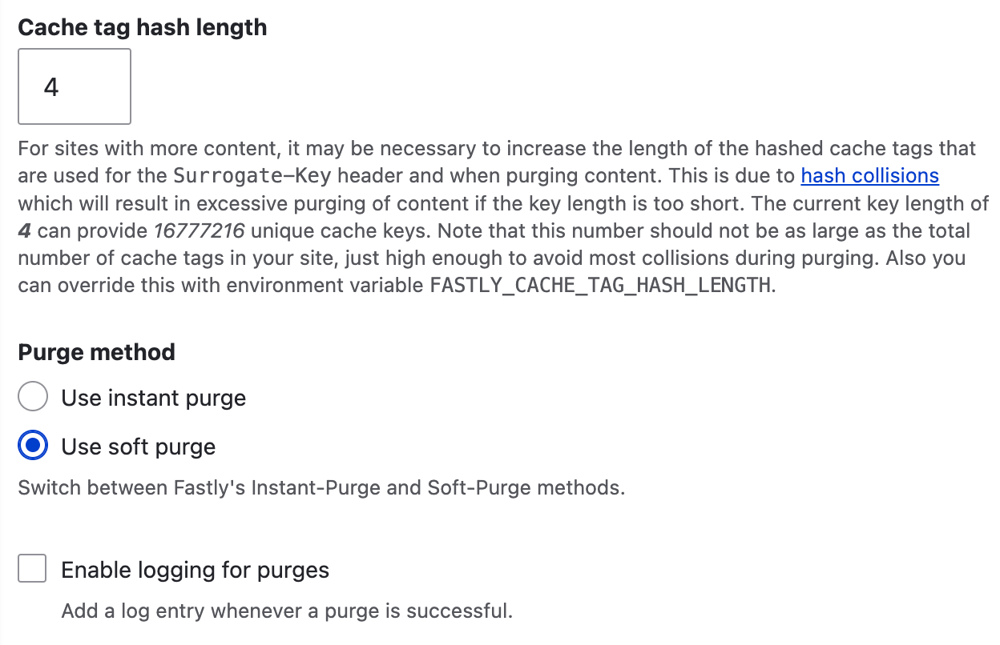
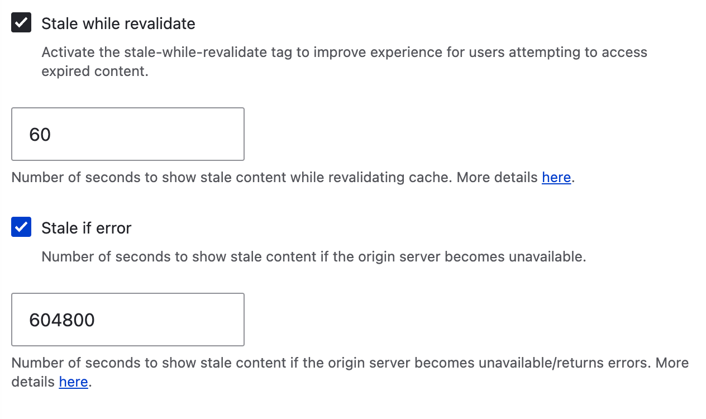
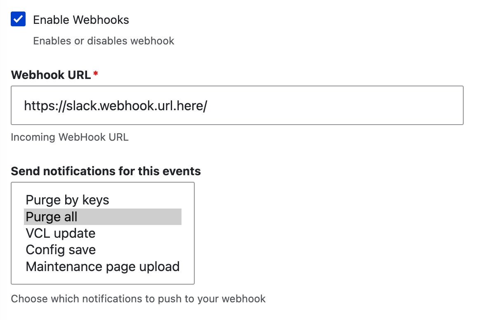

Integrate Drupal & Fastly#
Prerequisites#
- Drupal 7+
- A Fastly service ID
- A Fastly API token with the permission to purge
Drupal 7 with URL based purging#
- Download and install the Fastly Drupal module.
- Configure the Fastly service ID and API token.
- Optionally configure the webhooks (so you can ping Slack for instance when a cache purge is sent)
- Only URL based purging can be done in Drupal 7 (simple purging).
- Alter Drupal's client IP in
settings.php:
Drupal 10+ with cache tag purging#
Use Composer to get the latest version of the module:
composer require drupal/fastly drupal/http_cache_control drupal/purge
You will need to enable the following modules:
fastlyfastlypurgerhttp_cache_control(2.x)purgepurge_ui(technically optional, but this is really handy to have enabled on production)purge_processor_lateruntimepurge_processor_cronpurge_queuer_coretagspurge_drush(useful for purge via Drush, here is a list of commands)
Configure the Fastly module in Drupal#
Configure the Fastly service ID and API token. A Site ID is generated for you automatically. You can use runtime environment variables, or you can edit the settings form found at /admin/config/services/fastly:
FASTLY_API_TOKENFASTLY_API_SERVICE
Set the purge options#
- Cache tag hash length: 4
- Purge method: Use soft purge
A 4 character cache tag is plenty for most sites, a 5 character cache tag is likely better for sites with millions of entities (to reduce cache tag collisions).
Note
Soft purging should be used, this means the object in Fastly is marked as stale, rather than being evicted entirely so that it can be used in the event the origin is down (with the feature serve while stale).

Set the Stale Content Options#
Set the options to what makes sense for your site. Minimum 1 hour (3600), maximum 1 week (604800). Generally something like the following will be fine:
- Stale while revalidate - on,
14440seconds - Stale if error - on,
604800seconds

Optionally configure the webhooks (so you can ping Slack for instance when a cache purge is sent).

Configure the Purge module#
Visit the purge page /admin/config/development/performance/purge
Set up the following options:
Cache Invalidation#
- Drupal Origin: Tag
- Fastly: E, Tag, URL

Queue#
- Queuers: Core tags queuer, Purge block(s)
- Queue: Database
- Processors: Core processor, Late runtime processor, Purge block(s)

What this means is that we will be using Drupal's built-in core tag queuer (add tags to the queue), the queue will be stored in the database (default), and the queue will be processed by
- Cron processor
- Late runtime processor
In order for the cron processor to run, you need to ensure that cron is running on your site. Ideally every minute. You can manually run it in your cli pod, to ensure that purge_processor_cron_cron() is being executed without errors.
[drupal8]production@cli-drupal:/app$ drush cron -v
...
[notice] Starting execution of purge_processor_cron_cron(), execution of node_cron() took 21.16ms.
The Late runtime processor will run in hook_exit() for every page load, this can be useful to process the purges nearly as quickly as they come into the queue.
By having both, you guarantee that purges happen as soon as possible.
Optimal Cache Header Setup#
Out of the box, Drupal does not have the power to set different cache lifetimes in the browser vs in Fastly. So if you do set long cache lifetimes in Drupal, often end users will not see them if their browser has cached the page. If you install the 2.x version of the HTTP Cache Control module, this will give you a lot more flexibility on what caches and for how long.
For most sites, a sensible default could be
- Shared cache maximum age : 1 month
- Browser cache maximum age : 10 minutes
- 404 cache maximum age: 15 minutes
- 302 cache maximum age: 1 hour
- 301 cache maximum age: 1 hour
- 5xx cache maximum age: no cache
Note
This relies on your site having accurate cache tags represented for all the content that exists on the page.
True client IPs#
We configure Fastly to send the actual client IP back on the HTTP header True-Client-IP, you can make Drupal respect this header with the following changes in settings.php:
$settings['reverse_proxy'] = TRUE;
$settings['reverse_proxy_header'] = 'HTTP_TRUE_CLIENT_IP';
However, with Drupal 8.7.0, there was a change to remove this functionality. You can achieve the same goal with the following snippet
/**
* Tell Drupal to use the True-Client-IP HTTP header.
*/
if (isset($_SERVER['HTTP_TRUE_CLIENT_IP'])) {
$_SERVER['REMOTE_ADDR'] = $_SERVER['HTTP_TRUE_CLIENT_IP'];
}
Drush integration#
fastly:
fastly:purge:all (fpall) Purge whole service.
fastly:purge:key (fpkey) Purge cache by key.
fastly:purge:url (fpurl) Purge cache by Url.
Viewing Fastly caching headers using cURL#
Use this function: (works in Linux and Mac OSX)
function curlf() { curl -sLIXGET -H 'Fastly-Debug:1' "$@" | grep -iE 'X-Cache|Cache-Control|Set-Cookie|X-Varnish|X-Hits|Vary|Fastly-Debug|X-Served|surrogate-control|surrogate-key' }
$ curlf https://www.example-site-fastly.com
cache-control: max-age=601, public, s-maxage=2764800
surrogate-control: max-age=2764800, public, stale-while-revalidate=3600, stale-if-error=3600
fastly-debug-path: (D cache-wlg10427-WLG 1612906144) (F cache-wlg10426-WLG 1612906141) (D cache-fra19179-FRA 1612906141) (F cache-fra19122-FRA 1612906141)
fastly-debug-ttl: (H cache-wlg10427-WLG - - 3) (M cache-fra19179-FRA - - 0)
fastly-debug-digest: 1118d9fefc8a514ca49d49cb6ece04649e1acf1663398212650bb462ba84c381
x-served-by: cache-fra19179-FRA, cache-wlg10427-WLG
x-cache: MISS, HIT
x-cache-hits: 0, 1
vary: Cookie, Accept-Encoding
From the above headers we can see that:
- The HTML page is cacheable
- Browsers will cache the page for 601 seconds
- Fastly will cache the page for 32 days (
2764800seconds) - Tiered caching is in effect (edge PoP in Wellington, and shield PoP in France)
- The HTML page was a cache hit at the edge PoP
Sending manual purge requests to Fastly#
If you ever want to remove a specific page from cache manually, there are ways to do this.
curl -Ssi -XPURGE -H 'Fastly-Soft-Purge:1' -H "Fastly-Key:$FASTLY_API_TOKEN" https://www.example.com/subpage
You can also purge by cache tag:
curl -XPOST -H 'Fastly-Soft-Purge:1' -H "Fastly-Key:$FASTLY_API_TOKEN" https://api.fastly.com/service/$FASTLY_API_SERVICE/purge/<surrogatekey>
You can also use the Fastly CLI which helps to make this a little nicer.